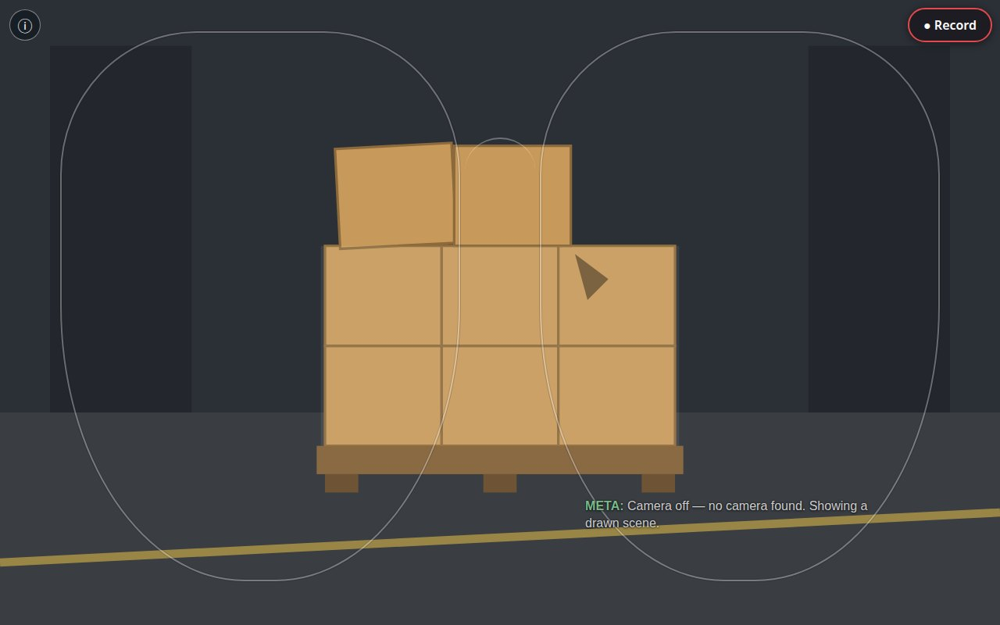
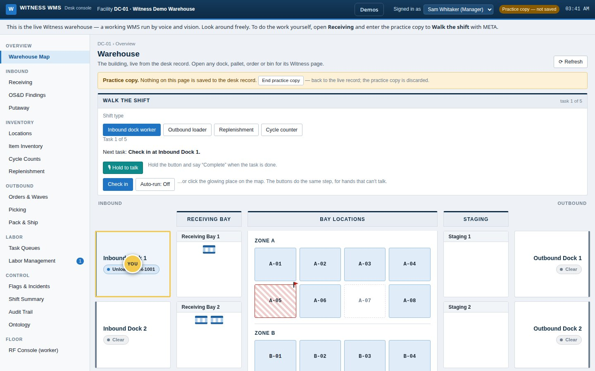

Witness
A whole warehouse run by voice and vision: Witness listens and updates your WMS across every action within your warehouse.
Witness grew past the dock. It is now an AI layer spanning the entire process, from dock appointment to load and ship — shown here on a dummy WMS built for the purpose, and designed to sit on the system a warehouse already runs: dock doors, zones and bins, inbound and outbound, a work queue where the system deals whole jobs — one shipment’s or one order’s full flow — to each worker from their department’s pool, a central agent that prepares work before anyone asks and warns managers about what is about to jam — proposals, never decisions — and a dynamic ontology that learns the building’s own language, asking when it does not know a word and remembering the answer. The ontology learns new features, too: when the system grows a capability it has never seen, the ontology detects the new shape on its own, describes it from real examples, and waits for a person to settle what it means. The receiving cross-check below is where it starts: module one, not the whole story.
Most damage, shortage, and compliance claims are born at the receiving dock, in the gap between what the paperwork says arrived and what physically showed up. Witness closes that gap by taking two independent scans of the same pallet: the receiver walks it and says what they see out loud — count, wrap, condition, packaging, stackability, and the judgments that come with the job, like separating incompatible dangerous goods or sending a pallet for repack — and the camera takes the same pallet in from every side. Where the two scans agree, the record is settled. Where they disagree, that disagreement is the finding: the OS&D evidence, captured at handoff instead of reconstructed weeks later.


The bill of lading is already in the building before the truck arrives, so nobody recites reference numbers at the dock. Identity comes from a scan; voice carries only what the receiver’s eyes and hands know. Findings notify the planner; the system never emails anyone outside on its own authority. Built and submitted for the Meta Global AI Developer Hackathon inside the October 26 – November 4, 2026 build window — and still growing past it: Witness is a flagship project, not a leftover.
The files in Witness open the same way: each one begins by saying what it is and what it will not do. Compiled word for word, they make a 62-file walk through the whole system — the ontology and the central agent at the core, then the warehouse surfaces, and the glasses last. Read the code in its own words.
The product is specified as well as built. The Witness specification sets out the full feature set — the glasses, the ontology, the interpretation layer, the gate, work assignment, freight verification, host integration — the architecture under it, and the questions still open, in one document written for developers.
Next in the notebook: TMS Consolidation Agent →